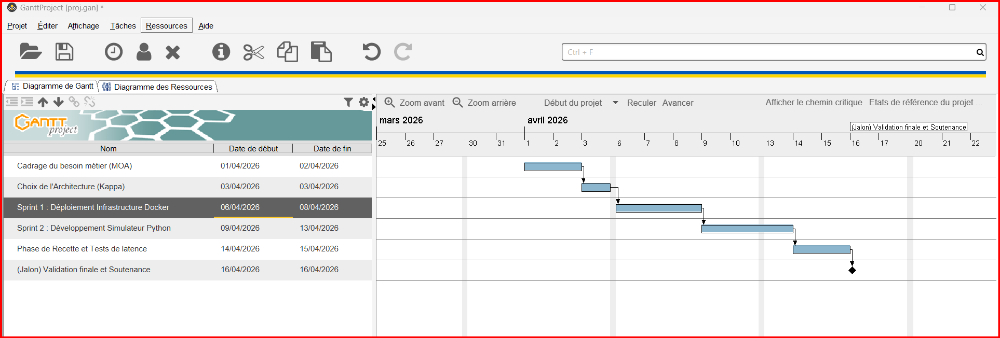
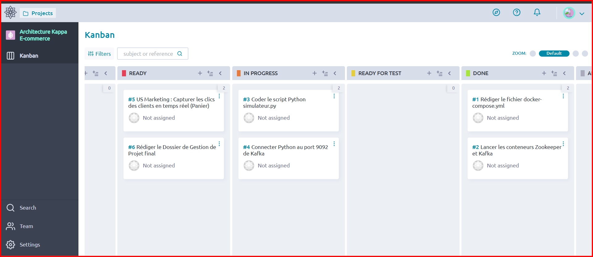

🏗️
Architecture Kappa
Traitement Événementiel Unifié pour le E-commerce
Apache Kafka
Python
Docker
Apache Flink
Yazid TAHIRI ALAOUI · Souhayla ECH-CHARAY · Ouissal EL AMRANI
Pr. Redouan ABAKOUY — ENSA Al Hoceima — 2025/2026
📋 Plan de la Présentation
1️⃣ Introduction
Contexte, problématique et objectifs
2️⃣ Architecture
Kappa vs Lambda — choix technique
3️⃣ Acteurs & Rôles
MOA, MOE, Chef de Projet
4️⃣ Planification
Sprints, Gantt, Estimation
5️⃣ Implémentation
Topologies et démo en direct
6️⃣ Risques & Conclusion
Matrice des risques, perspectives
📖
Bloc 1 — Introduction
Contexte et Problématique
Le Contexte
🏪 Plateforme E-commerce Fictive
- Des milliers de clics, vues, paniers, achats chaque seconde
- Besoin de traitement en temps réel (pas en batch toutes les heures)
- Le Marketing veut des alertes immédiates quand un client abandonne son panier
Problématique : Comment traiter un flux continu d'événements avec un seul système unifié, tout en garantissant la cohérence des résultats ?
📐
Bloc 2 — Architecture
Kappa vs Lambda
Lambda vs Kappa
❌ Lambda (2011)
- 2 couches : Batch + Speed
- Code dupliqué
- Résultats potentiellement incohérents
- Maintenance complexe
✅ Kappa (2014)
- 1 seul flux continu
- Code unique
- Cohérence garantie par le Replay
- Simplicité opérationnelle
Jay Kreps (créateur de Kafka) : « Si le streaming est assez robuste, pourquoi avoir un batch layer ? »
Notre Pipeline Kappa
🏪
Simulateur
simulateur.py
→
📨
Kafka
clics_ecommerce
→
🔍
Filtrage
Bots éliminés
→
📨
Kafka
clics_filtres
📊
Agrégation
Stats par produit
←
📨 Kafka
clics_filtres
→
🚨
Détection
Abandon panier
👥
Bloc 3 — Acteurs et Rôles
Gouvernance du Projet
Les Parties Prenantes
🏢
MOA
Maîtrise d'Ouvrage
Équipe Marketing
« Que faut-il faire ? »
📋
Chef de Projet
Coordinateur
Planifie, gère les risques et assure le lien
💻
MOE
Maîtrise d'Œuvre
Équipe Technique
« Comment le faire ? »
Yazid TAHIRI ALAOUI
MOE — Développeur
Souhayla ECH-CHARAY
Chef de Projet
Ouissal EL AMRANI
MOA — Validation
📅
Bloc 4 — Planification
Sprints, Gantt, Estimation
Découpage en Sprints
| Sprint | Objectif | Livrable | Points | Statut |
|---|
| Sprint 0 | Cadrage & Choix architecture | Document de décision | 3 | ✅ |
| Sprint 1 | Infrastructure Docker | Kafka + Flink opérationnels | 8 | ✅ |
| Sprint 2 | Simulateur + 3 Topologies | Pipeline fonctionnel | 13 | ✅ |
| Sprint 3 | Validation + Rapport | Test replay + documentation | 8 | ✅ |
Diagramme de Gantt

Suivi Kanban — Taiga

🔄
Bloc 5 — Méthodologie Agile
Scrum & Kanban
Pourquoi Agile ?
🔄 Scrum
- Itérations courtes (Sprints)
- Livraison incrémentale
- Feedback continu de la MOA
- Sprint Review à chaque fin de sprint
📊 Kanban
- Visualisation du flux sur Taiga
- Colonnes : NEW → READY → IN PROGRESS → DONE
- Limite du travail en cours (WIP)
Technologies nouvelles (Kafka, Flink) → Forte incertitude → Agile est le meilleur choix
⚡
Bloc 6 — Implémentation
Démonstration technique
Infrastructure Docker
| Service | Rôle |
|---|
| Zookeeper | Coordination du cluster |
| Kafka | Log d'événements (le cœur) |
| Flink JobManager | Gestion des jobs |
| Flink TaskManager | Exécution des tâches |
Topologie 1 : Filtrage des Bots
~20% du trafic web réel provient de robots (Googlebot, Bingbot...). Cette topologie les élimine en temps réel pour ne garder que les clics humains.
Topologie 2 : Agrégation Temps Réel
Calcul par fenêtres de 30 secondes : vues, paniers, achats, chiffre d'affaires et taux de conversion par produit.
Topologie 3 : Détection d'Abandon
Traitement avec état (stateful) : si un client ajoute au panier mais n'achète pas en 60s → 🚨 alerte marketing avec action recommandée.
Rétention & Replay — La Preuve Kappa
Le test fondamental : Rejouer TOUS les événements depuis le début et vérifier que le résultat est identique au temps réel → Cohérence prouvée ✅
Topics Kafka & Rétention
| Topic | Contenu | Rétention | Partitions |
|---|
clics_ecommerce | Événements bruts (humains + bots) | 7 jours | 3 |
clics_filtres | Événements nettoyés | 3 jours | 3 |
stats_produits | Statistiques agrégées | 1 jour | 1 |
alertes_marketing | Alertes d'abandon | 7 jours | 1 |
La rétention remplace le Batch Layer de Lambda → C'est ce qui rend le Replay possible
⚠️
Bloc 7 — Gestion des Risques
Identification, Prévention, Suivi
Matrice des Risques
| Risque | Prob. | Impact | Action préventive | Statut |
|---|
| Perte de données Kafka | Moy. | Élevé | Rétention 7j + replay | ✅ Mitigé |
| Retard de livraison | Élevée | Élevé | Planning Poker + Sprints courts | ✅ Mitigé |
| Incompatibilité versions | Moy. | Élevé | Versions figées dans Docker | ✅ Résolu |
| Incohérence des données | Faible | Élevé | Test de replay automatisé | ✅ Résolu |
| Manque de compétences | Élevée | Moyen | Formation + documentation | ✅ Résolu |
🎯
Conclusion & Perspectives
Ce que nous avons accompli
✅ Réalisé
- Infrastructure Kafka/Flink/Docker
- Simulateur e-commerce réaliste
- 3 topologies de traitement de flux
- Rétention configurable par topic
- Validation de cohérence par replay
- Documentation complète (7 blocs)
🔮 Perspectives
- Machine Learning en temps réel
- Prédiction du prochain achat
- Dashboard de monitoring live
- Déploiement cloud (AWS/GCP)
- Ajustement dynamique des prix
🙏
Merci !
Des questions ?
Yazid TAHIRI ALAOUI · Souhayla ECH-CHARAY · Ouissal EL AMRANI
Gestion de Projets Informatiques — Pr. Redouan ABAKOUY
ENSA Al Hoceima — 2025/2026